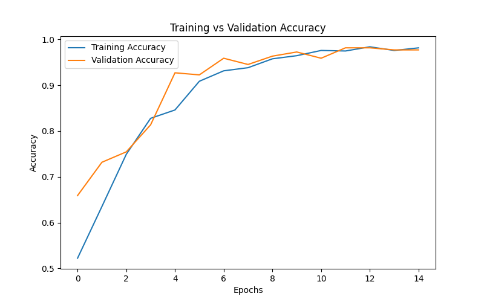
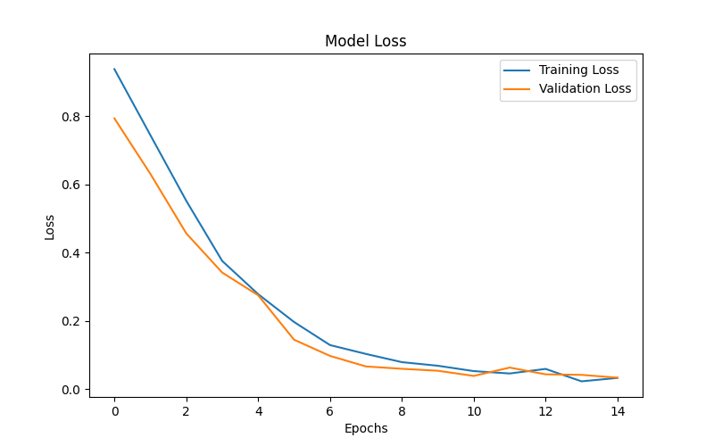
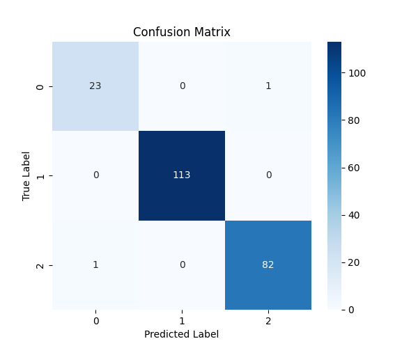
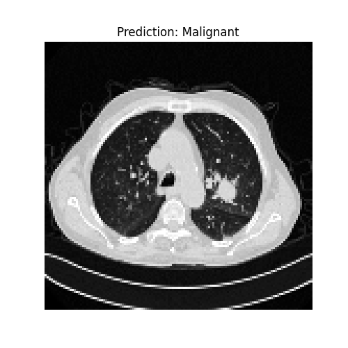
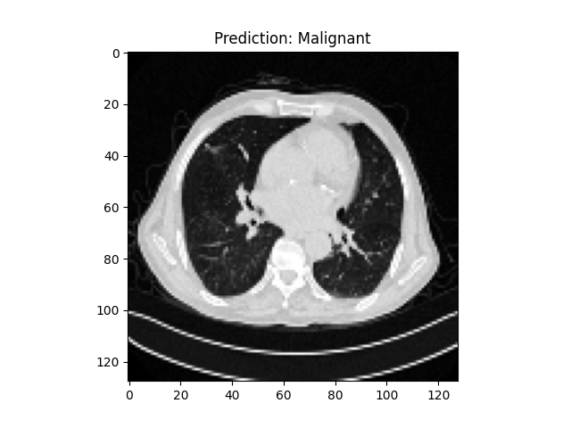

Project Overview
This project applies deep learning techniques to classify lung CT scan images and identify patterns related to lung abnormalities. Medical image classification is an important application of AI because image-based models can learn subtle visual differences that are difficult to capture manually.
Two versions of the project were developed. The first is a basic binary classification model to distinguish between Cancer and Normal CT scans. The second is an advanced multi-class model that classifies scans into Benign, Malignant, and Normal categories.
This project demonstrates practical skills in image preprocessing, CNN model design, training, evaluation, result visualization, prediction generation, and project presentation through GitHub and portfolio pages.
Tools & Technologies
- Python
- TensorFlow / Keras
- OpenCV
- NumPy
- Matplotlib
- Scikit-learn
- Seaborn
- Jupyter Notebook
Dataset
Dataset: IQ-OTHNCCD Lung Cancer Dataset
The dataset contains CT scan images organized into medically relevant classes:
- Normal
- Benign
- Malignant
Images were resized to 128×128, normalized, and organized into class-based folders for deep learning model training and testing.
Project Workflow
- Data Preparation: Organized CT scan images into binary and multi-class folder structures.
- Preprocessing: Applied image resizing, grayscale conversion, and normalization.
- Train-Test Split: Split the processed dataset into training and testing sets.
- Model Design: Built CNN architectures using convolutional, pooling, flattening, and dense layers.
- Training: Trained the CNN models using TensorFlow/Keras.
- Evaluation: Measured accuracy, loss, and class-level prediction performance.
- Model Saving: Saved trained models in `.keras` format for later reuse.
- Prediction: Used trained models to predict unseen CT scan images.
Project Objectives
- Build a CNN-based workflow for lung CT scan classification.
- Compare binary classification and multi-class classification approaches.
- Visualize model learning through training accuracy and loss curves.
- Evaluate class-level performance with a confusion matrix heatmap.
- Show real example predictions on unseen CT scan images.
Skills Demonstrated
- Medical image preprocessing
- Convolutional Neural Networks (CNNs)
- Binary and multi-class classification
- Model evaluation and interpretation
- Saving and loading trained models
- GitHub documentation and portfolio presentation
Model Training Results & Prediction Examples

Training vs Validation Accuracy
This graph shows how training and validation accuracy improved during the learning process. The steady increase suggests that the CNN model learned useful image features from the CT scan dataset.

Training vs Validation Loss
This graph shows how training and validation loss decreased across epochs, indicating that the model reduced prediction error over time.

Confusion Matrix Heatmap
The confusion matrix heatmap summarizes class-wise prediction performance and helps show how accurately the model distinguished between Normal, Benign, and Malignant scan images.

Sample CT Scan Image
This is an example CT scan image from the dataset used to train the deep learning model. It shows the type of medical imaging data used in this project.

Prediction Example — Normal
Example unseen CT scan image predicted by the trained CNN model as Normal.

Prediction Example — Malignant
Example unseen CT scan image predicted by the trained CNN model as Malignant.
Key Insights
- The CNN model successfully learned meaningful visual patterns from lung CT scan images.
- Training accuracy improved steadily while loss consistently decreased.
- The confusion matrix heatmap helped validate class-level model performance.
- The multi-class approach made the project more realistic and more representative of real medical classification tasks.
- Prediction examples demonstrate how the trained model can classify unseen lung CT scan images.
Why This Project Matters
Lung cancer detection is an important use case in medical AI because imaging data contains rich patterns that deep learning models can analyze efficiently. This project demonstrates how CNNs can be applied to CT scan images for automated classification tasks.
Beyond the healthcare context, this project also reflects important machine learning engineering skills: data preparation, preprocessing, model training, evaluation, visualization, and presenting results in a structured portfolio format.
Project Link
Explore the full notebooks, trained models, dataset structure, and project documentation on GitHub.
Open GitHub Repository